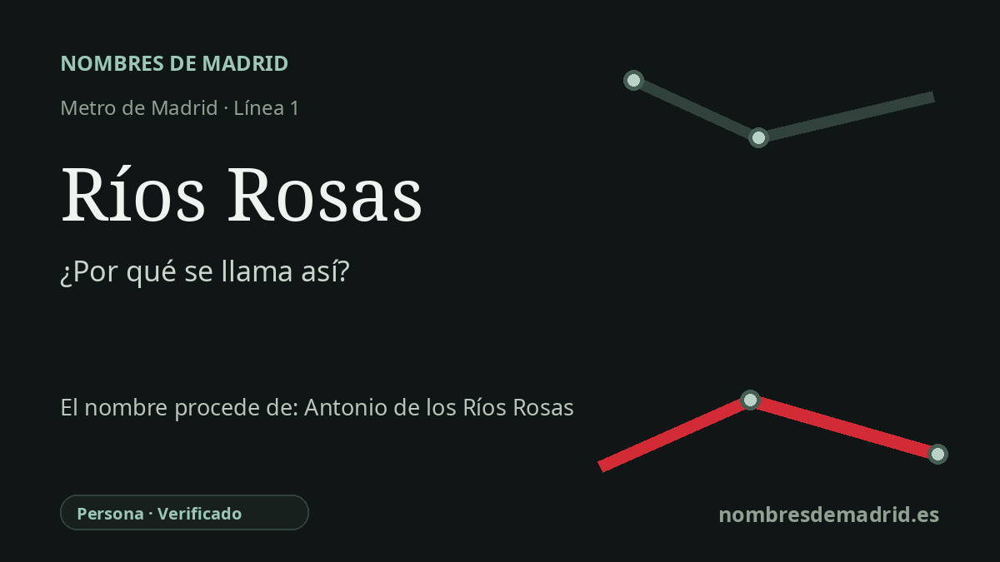

Publicado el · Investigación de Nombres de Madrid · Cómo verificamos cada origen · 7 fuentes consultadas
Respuesta rápida
Ríos Rosas toma su nombre de la cercana calle de Ríos Rosas, dedicada a Antonio Sánchez del Río y López de la Rosa, célebre jurista, orador y político español del siglo XIX. La estación se inauguró el 17 de octubre de 1919 dentro del primer tramo de la línea 1 del Metro de Madrid.
La historia del nombre
La estación de Ríos Rosas recibe su nombre del lugar urbano en el que se encuentra: el acceso del Metro se sitúa en la calle de Santa Engracia a la altura de la calle de Ríos Rosas. Esa calle, y después el barrio de Chamberí que lleva el mismo nombre, conservan la memoria pública de Antonio Sánchez del Río y López de la Rosa, más conocido en la vida pública como Antonio de los Ríos Rosas o Antonio de los Ríos y Rosas.
Ríos Rosas nació en Ronda, Málaga, el 16 de marzo de 1812 y murió en Madrid el 3 de noviembre de 1873. Se formó en Derecho en la Universidad de Granada y llegó a ser una de las grandes figuras parlamentarias de la España liberal de mediados del siglo XIX. Su carrera pública incluyó actas de diputado, el Ministerio de la Gobernación, misiones diplomáticas en Lisboa y ante la Santa Sede, y la presidencia del Congreso de los Diputados en más de una legislatura.
El nombre también pertenece a la historia del crecimiento de Madrid hacia el norte. La calle de Ríos Rosas fue una vía moderna del siglo XIX en el Chamberí en desarrollo, entre el eje de Bravo Murillo y la Castellana. Cuando llegó el Metro, el nombre ya funcionaba como referencia local, de modo que la estación tomó el topónimo de la calle próxima en vez de crear una dedicatoria nueva.
La historia del transporte añade peso al nombre. Ríos Rosas fue una de las estaciones originales de la línea 1, la primera del Metro de Madrid, inaugurada oficialmente por el rey Alfonso XIII el 17 de octubre de 1919 entre Sol y Cuatro Caminos. La documentación histórica de Metro sitúa la estación cerca de las instalaciones del Canal de Isabel II y de la Escuela de Ingenieros de Minas, dos hitos que ayudan a entender la identidad urbana de esta zona de Chamberí.
La etimología, por tanto, está bien respaldada, con un matiz: la estación no parece haber sido nombrada directamente mediante un acto biográfico dedicado al político, sino a través de una calle y un topónimo ya existentes. Las fuentes confirman la persona y la inauguración de 1919; su nombre histórico completo es Antonio Sánchez del Río y López de la Rosa, conocido públicamente como Ríos Rosas o Ríos y Rosas.